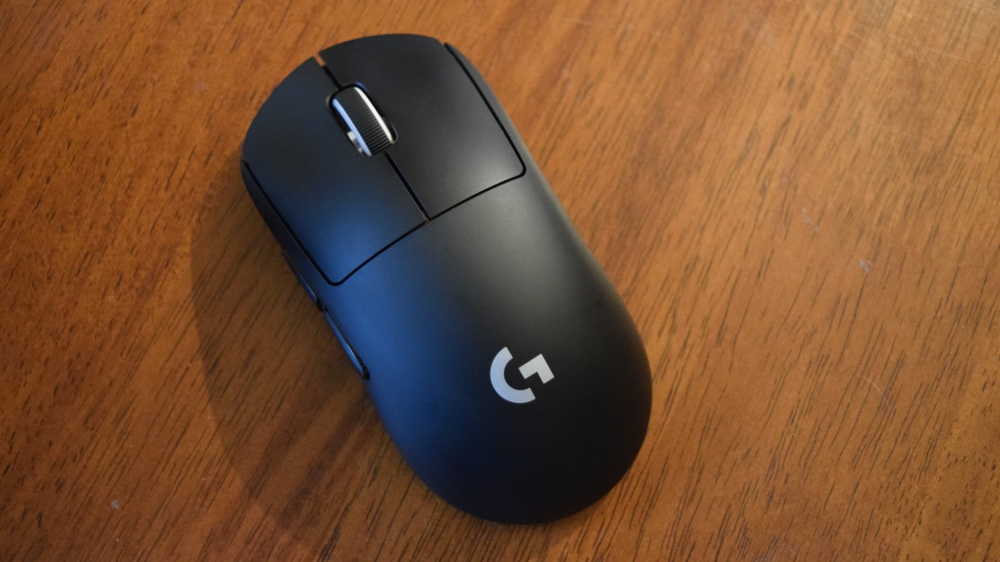
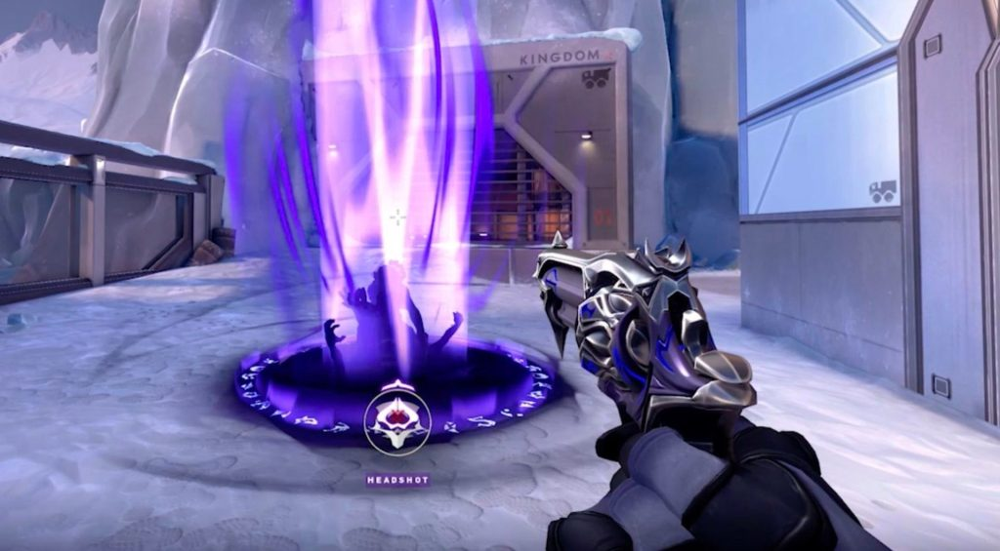

DPI Mouse
Untuk memperbagus AIM di Valorant,pertama kalian harus memperhatikan DPI kalian.Jumlahan tiap DPI di dalam mouse tentunya mempengaruhi kecepatan gerak.
Sederhananya semakin besar DPI yang dimiliki oleh mouse tersebut maka sensivity-nya akan semakin tinggi.
Mengukur sensivity hanya dengan menggeser-geser mouse tidak akan membantu kalian.
Tentunya kalian harus tahu pasti berapa jumlah DPI yang ada di mouse kalian lalu atur sensivity.

Placement Cursor
Selain memperhatikan DPI Mouse dan sensitivitynya,kalian juga harus memperhatikan placement cursor kalian.
Untuk itu kalian harus melatih fokus meyelaraskan arah mata dengan cursor kalian.
Cara melatih fokus kalian dengan memperbanyak latihan dan juga meningkatkan jam terbang.
Jika sudah,kalian pasti sudah memperbagus AIM kalian.